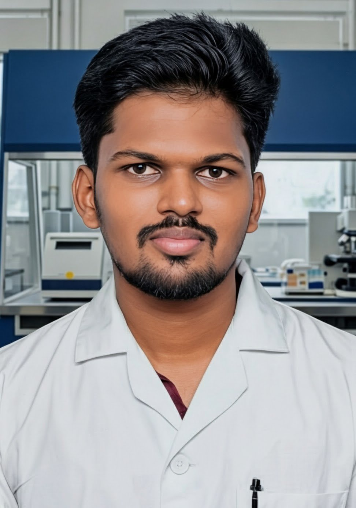

Dhanush Pandiyan Balakrishnan
Researcher
Bridging Molecular Biology with Computational Precision
Multidisciplinary researcher completing an MSc in Biotechnology at the Sri Ramachandra Institute of Higher Education and Research. Expertise encompasses advanced microbiology, molecular diagnostics (PCR, SDS-PAGE), and applying machine learning via Julia for bioinformatics.
Proven track record in complex research, including breast cancer microbiome profiling and predictive viral strain modeling. Dedicated to integrating wet-lab methodologies with data-driven insights to drive innovative bioprocessing and disease diagnostics.
Professional Evolution
MSc Biotechnology
Sri Ramachandra Institute of Higher Education and Research (SRIHER)
Investigated the role of the Bacteroides fragilis (susD gene) in breast cancer-associated microbiome profiles and developed supervised machine learning models in Julia for viral strain prediction. Maintained an 8.54 CGPA.
Research & Development Fellow
MakerGhat Foundation Incubation Program
Designed and optimized prototypes of instant fermentation-based probiotic products, successfully scaling the process from laboratory to pilot scale during a 6-month incubation.
BSc Botany
Thiagarajar College (Autonomous)
Graduated with a 9.06 CGPA (Third Rank Holder). Won the TC Yukti 2024 Innovation Contest for developing an instant ferment probiotic product. Recognized with the Academic Excellence Award.
Technical Proficiency
Microbiology
- Microbial Culture & Isolation
- Aseptic & Staining Techniques
- Biosafety & Lab Operations
Molecular Biology
- PCR & Gel Electrophoresis (AGE)
- DNA/RNA Extraction
- SDS-PAGE & RFLP Analysis
Bioprocess Engineering
- Fermentation Probiotics
- Prototype Design
- Lab to Pilot Scale Up
Computational Bio
- Julia Programming
- Machine Learning Models
- Molecular Docking
Diagnostics & Cell Bio
- Mammalian Cell Culture
- ELISA & Immunoassays
- Sample Preparation
Microbiome Research
- Tumor & Oral Wash Profiling
- Bacteroides fragilis (susD) Analysis
Pioneering Bio-Computational Projects

Tumor Microbiome Profiling
Investigated the role of Bacteroides fragilis (susD gene) in breast cancer-associated microbiome profiles utilizing tumor and oral wash samples.

Viral Strain Prediction
Developed a supervised machine learning model using physicochemical features of spike proteins for the epidemiological profiling of various viruses.

Probiotic Fermentation Scaling
Designed and optimized instant fermentation-based probiotic prototypes, successfully scaling the process from laboratory to pilot production.
Honors & Certifications
NPTEL Elite Scholar
Food Microbiology (IIT Kharagpur)
Yukti 2024 Winner
National Innovation Contest
SRM Conference
Oral Presenter
Let's Synthesize Something Great
Open for research collaborations, PhD opportunities, and innovative R&D roles.